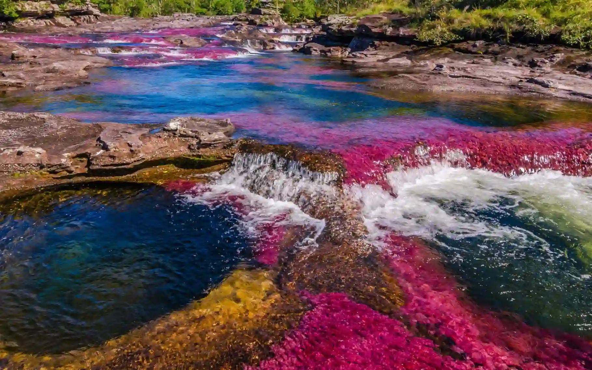

Data
Country: Colombia
Department: Meta
Municipality: La Macarena
Region: Serania de la Macarena
River: Caño Cristales
Known as: River of Five Colors
Elevation: 200m
Best Season: June to November
Weather

Temperature: 28°C
Conditions: Sunny
Humidity: 78%
Wind: 10 Km/h
Wind Chill: